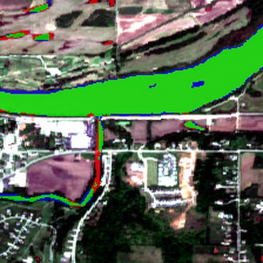
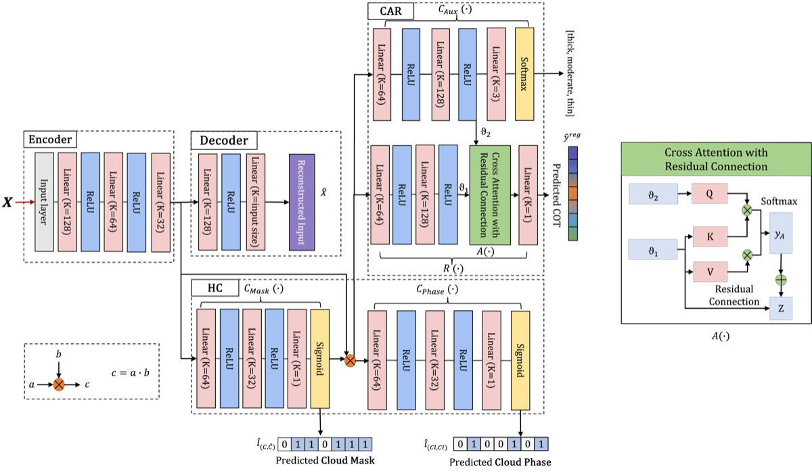
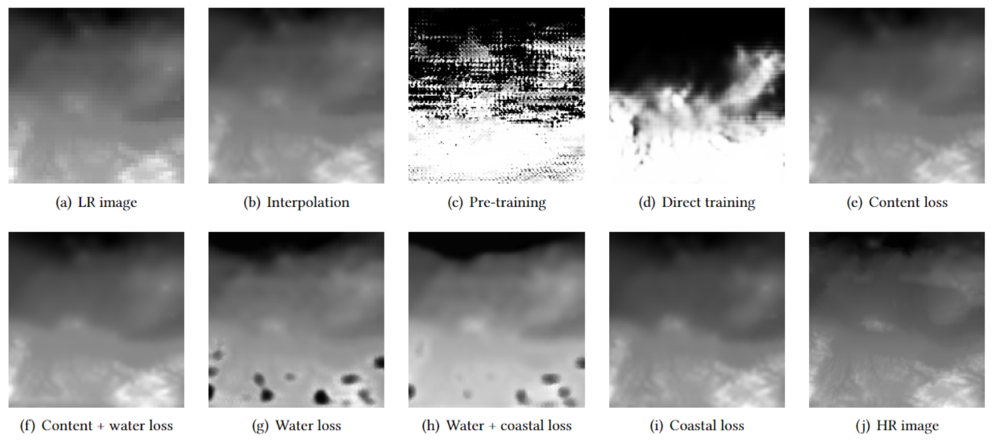

About
I develop accurate and efficient machine learning methods for Earth and atmospheric science. My work covers cloud-property retrieval, rainfall estimation, and storm forecasting from satellite observations and reanalysis, and the adaptation of pretrained weather and Earth-observation foundation models to new sensors and tasks.
I am advised by Jianwu Wang at UMBC and co-advised by Jie Gong at NASA Goddard Space Flight Center. I plan to defend my dissertation in April 2027, and I am looking for research positions starting in 2027.
Research
Coupling satellite and weather foundation models for rainfall and storm forecasting
In preparation


SPECTRA: Band-routed embedding and stage-wise LoRA for cross-sensor fine-tuning of geospatial foundation models
ACM SIGSPATIAL, 2026
paperproject page and democode
Pretrained geospatial models expect a fixed set of spectral bands, but downstream sensors provide different ones. SPECTRA routes all available bands into the pretrained input and assigns low-rank adaptation capacity stage by stage, training 3–8% of the parameters across three foundation models and four segmentation datasets.

MT-HCCAR: Multi-task deep learning with hierarchical classification and attention-based regression for cloud property retrieval
ECML PKDD, Applied Data Science Track, 2024
One model that detects clouds, separates liquid from ice phase, and estimates cloud optical thickness, with detection and phase guiding the thickness estimate. Evaluated on simulated observations from three satellite instruments (OCI, VIIRS, ABI).

Enhanced deep learning super-resolution for bathymetry data
IEEE/ACM BDCAT, 2022
SR-ResNet and SR-GAN models that increase the spatial detail of bathymetric maps and improve the representation of underwater terrain, developed with NASA GSFC's AI Center of Excellence.
Other Publications
- D. Murphy, K. Zhang, C. Parten, A. Sterling, H. Zhang, X. Li, J. A. Caraballo-Vega, J. Gong, M. L. Carroll, and J. Wang. Deep learning approaches for cloud property retrieval: Comparing foundation model fine-tuning with training from scratch. IEEE ICDM Workshops, 2025.
- O. Faruque, X. Li, M. A. Khan, H. Alam, and J. Wang. Comparative evaluation of causal discovery and inference approaches on Arctic sea ice time series data. IEEE Big Data, BDA4S Workshop, 2024.
- S. Ali, U. Hasan, X. Li, O. Faruque, A. Sampath, Y. Huang, M. O. Gani, and J. Wang. Causality for Earth science: A review on time-series and spatiotemporal causality methods. arXiv:2404.05746, 2024.
- X. Wang, P. Guo, X. Li, A. Gangopadhyay, C. E. Busart, J. Freeman, and J. Wang. Reproducible and portable big data analytics in the cloud. IEEE Transactions on Cloud Computing, 2023.
- S. Ali, S. A. M. Mostafa, X. Li, S. Khanjani, J. Wang, J. Foulds, and V. Janeja. Benchmarking probabilistic machine learning models for Arctic sea ice. IEEE IGARSS, 2022.
Teaching and Research Computing
- 2025 – nowResearch assistant, UMBC High Performance Computing Facility. Key author and instructor of Scale-Up: The HPC & AI Tutorial Series, a five-part program covering cluster access, reproducible workflows, parallel computing, and scalable AI.
- Summer 2025Tutorials and mentoring for undergraduate researchers in UMBC's REU program, on PyTorch and on adapting geospatial foundation models for cloud-property retrieval.
Fellowships and Awards
- 2026Student Travel Award, ACM SIGSPATIAL
- 2024Technuf Endowed Fellowship, Department of Information Systems, UMBC
- 2022 – 2023GESTAR II Graduate Fellowship, UMBC–NASA research partnership
- 2021Student Travel Award, IEEE International Conference on Big Data
- 2019China National Scholarship, Ministry of Education of China (top 1%)